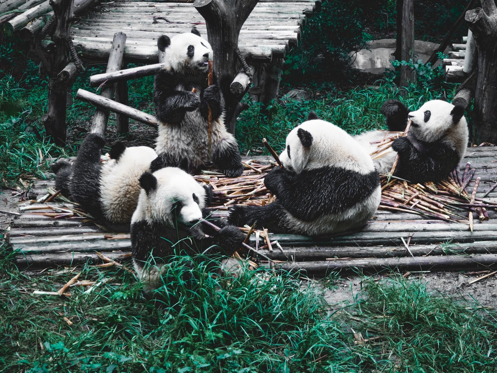
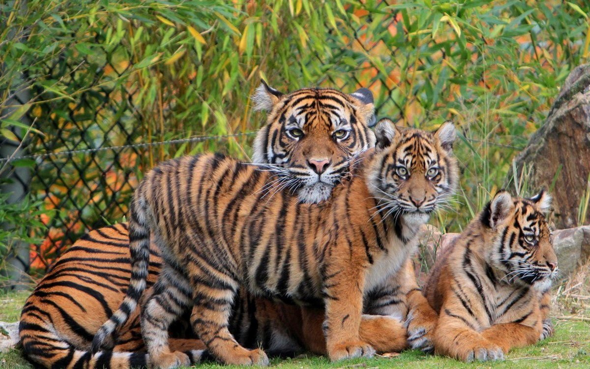
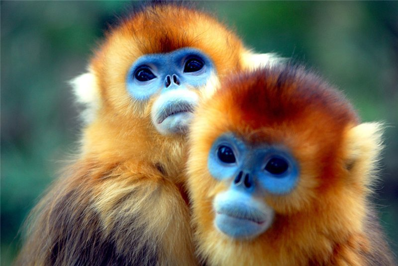
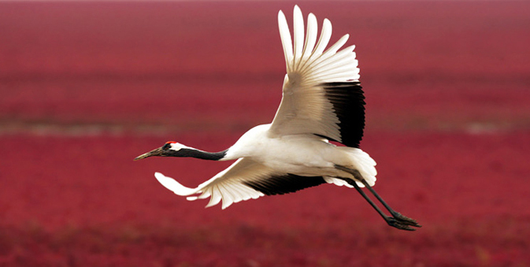

Символ сохранения природы Китая
Большие панды являются не только символом Китая, но и всемирным символом охраны природы. Эти уникальные животные обитают в горных бамбуковых лесах центрального Китая.
Китай инвестирует значительные ресурсы в сохранение панд, включая создание заповедников, научные исследования и международные программы разведения.
"Сохранение панд - это сохранение нашего общего природного наследия" — Директор заповедника Волонг

Тигры и леопарды северо-восточного Китая

Северо-восточный Китай является домом для амурских тигров - самых крупных представителей кошачьих в мире, находящихся под угрозой исчезновения.
Китай сотрудничает с Россией и другими странами в создании трансграничных заповедников для сохранения мигрирующих популяций тигров и леопардов.
"Там, где выживают тигры, процветает вся экосистема" — Международный фонд защиты тигров
Уникальные обезьяны тропических лесов
Эти уникальные приматы с ярко-золотистой шерстью и вздернутыми носами обитают только в горных лесах центрального Китая и являются эндемиком региона.
Ученые изучают социальное поведение и экологию золотистых курносых обезьян, чтобы разработать эффективные стратегии их сохранения в условиях изменения климата.
"Каждый вид приматов - это уникальная глава в книге эволюции" — Доктор Ван, приматолог

Миграционные пути и места гнездования

Китай расположен на основных миграционных путях перелетных птиц, что делает его критически важным для сохранения глобального птичьего разнообразия.
Китай сотрудничает с соседними странами в создании сети охраняемых территорий вдоль Восточно-Азиатско-Австралазийского пролетного пути.
"Птицы не знают границ - их сохранение требует международных усилий" — Китайское орнитологическое общество
Долина девяти деревень с разноцветными озерами
Каменные столбы, вдохновившие "Аватар"
Легендарные леса и биосферный заповедник